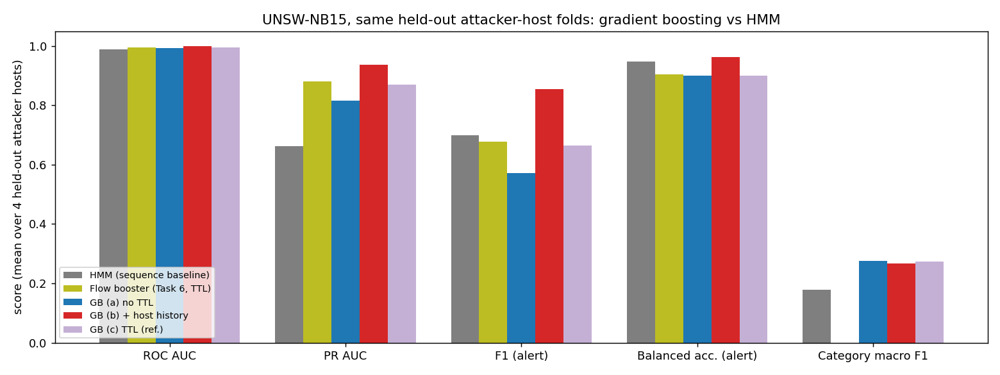
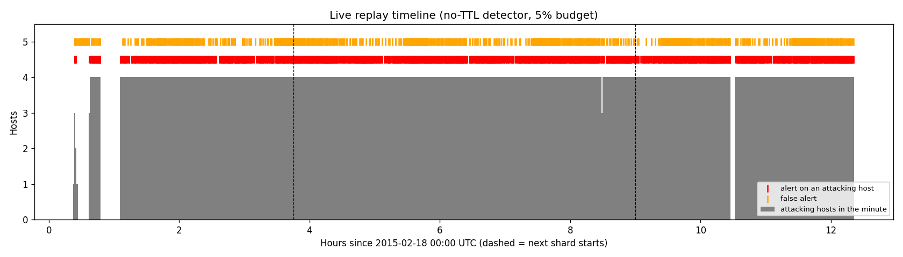
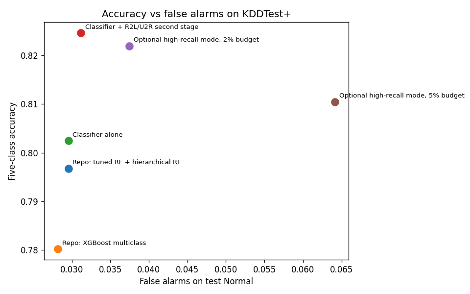
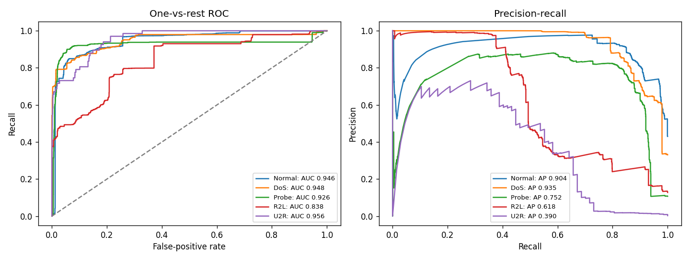
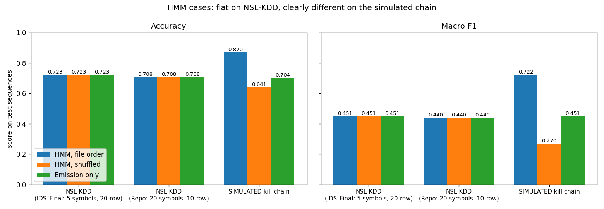
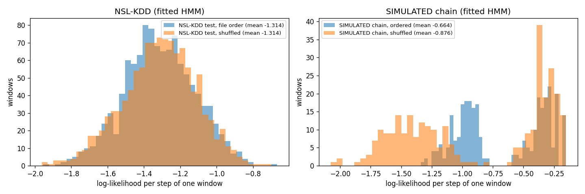

UNSW held-out ROC AUC
0.9987
GB + host history · no TTL
Summary of the intrusion detection experiments on UNSW-NB15 and NSL-KDD. The figures below cover held-out host performance, replay results, and sequence-model comparisons.
Primary comparison on unseen hosts, with TTL excluded from the selected model.
Positive class: attack. Values are from held-out hosts.
Gradient boosting primary detector · host-minute replay, no TTL.
Replay covers 18,456 host-minutes, including 2,737 attack-minutes. Median alert latency: 25 seconds; 90th percentile: 56 seconds.
Higher recall comes with tradeoffs; the selected host-history model has the best balanced performance here.
| Model | ROC AUC | Avg precision | Precision | Recall | F1 | Normal FPR |
|---|---|---|---|---|---|---|
| HMM | .9880 | .6634 | 61.8% | 91.1% | .698 | 1.53% |
| GB per-flow, no TTL | .9924 | .8150 | 57.3% | 81.7% | .572 | 1.68% |
| GB + host history, no TTL SELECTED | .9987 | .9361 | 80.2% | 92.9% | .855 | 0.44% |
| GB per-flow with TTL REFERENCE | .9944 | .8694 | 68.8% | 81.1% | .664 | 1.28% |


Test-set summary. The high-recall operating mode catches more attacks at the cost of more false alarms.
Classifier + second stage balances attack detection and false alarms; optional high-recall modes trade more false positives for coverage.
| Mode | Accuracy | Macro F1 | Attack precision | Attack detection | Normal FPR | Unseen detection |
|---|---|---|---|---|---|---|
| Classifier alone | 80.24% | .6861 | 96.93% | 70.61% | 2.96% | 38.08% |
| Classifier + R2L/U2R stage BALANCED | 82.47% | .7194 | 96.99% | 76.05% | 3.12% | 42.00% |
| High recall · 2% budget | 82.19% | .7260 | 96.70% | 83.18% | 3.75% | 64.75% |
| High recall · 5% budget | 81.05% | .7288 | 94.79% | 88.29% | 6.42% | 79.25% |


HMM transition modeling was tested against shuffled order and emission-only baselines.
For both evaluated HMM setups, file-order, shuffled, and emission-only accuracy were identical to four decimal places.
A controlled sequence with meaningful temporal structure provides a useful positive control.
This supports the experiment’s ability to show sequence gains when the data actually contain a temporal signal.


Useful conclusions and limitations to carry into the project presentation.
Adding host history raised held-out average precision to .9361 and recall to 92.9%, while the normal false positive rate was 0.44%.
Simulated kill-chain order improved accuracy, while NSL-KDD’s real row order showed no measurable gain over shuffled or emission-only baselines.
Reported attack recall fell to 6.3% for NSL-KDD → UNSW and 16.6% for UNSW → NSL-KDD. Strong in-domain scores do not imply cross-domain robustness.
Metrics come from distinct experiments and splits; compare models only within their stated evaluation setup. The live replay uses host-minute aggregation and its own selected threshold. The testbed TTL feature is flagged as an artefact and excluded from the primary result. This page summarizes results recorded in results/ids_unsw_summary.json and results/ids_nsl_kdd_summary.json.